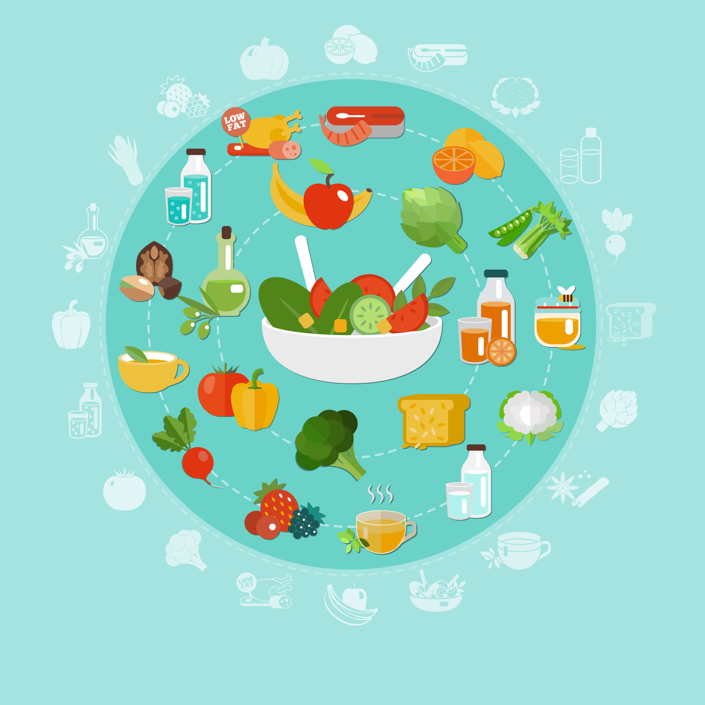

011-56274279
Agradecimientos
En esta sección queremos agradecer a las personas que han aportado sus imagenes. Para ello vamos a dejar un link en cada imagen para que vean sus trabajos.

Vector de Personas creado por vectorjuice
Ver enlaceBackground vector creado por freepik
Ver enlaceVector de Personas creado por stories
Ver enlace
Vector de Personas creado por stories
Ver enlaceVector de Médico creado por freepiks
Ver enlace

Alimento vetor criado por macrovector_official
Ver enlaceVector de Patrón creado por macrovector
Ver enlaceVector de Médico creado por freepik
Ver enlaceVector de Médico creado por freepik
Ver enlaceVector de Médico creado por freepik
Ver enlaceVector de Fondo creado por vextok
Ver enlace